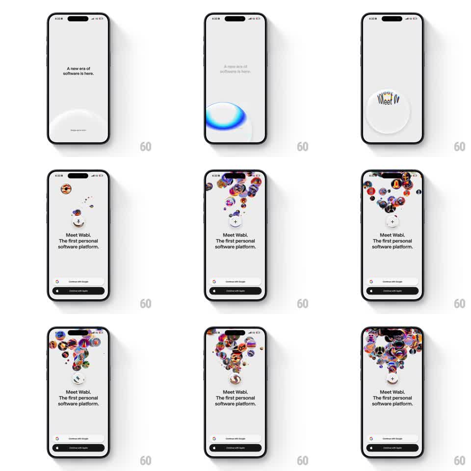

Media
Frame-by-frame

Rebuild this interaction 1:1: Wabi's onboarding intro - a swipe-up on a liquid-glass dome at the bottom of a quiet launch screen bursts the dome into a fountain of floating 3D avatar bubbles that rises behind the "Meet Wabi" headline.

Rebuild this interaction 1:1: Wabi's onboarding intro - a swipe-up on a liquid-glass dome at the bottom of a quiet launch screen bursts the dome into a fountain of floating 3D avatar bubbles that rises behind the "Meet Wabi" headline. ## Integration Integration: stack-agnostic spec - springs given as stiffness/damping, timed motions as duration + curve; map every value to your framework and animation library of choice. ## Scene Light gray screen. State A: centered headline "A new era of software is here.", a translucent liquid-glass dome (frosted, blurred backdrop) anchored to the bottom edge, and a small "Swipe up to enter" hint. State B: headline swaps to "Meet Wabi. The first personal software platform.", a "+" button sits center, and a rising column of glossy 3D avatar bubbles fills the upper two-thirds, fanning out into a tree/fountain silhouette; "Continue with Google" and "Continue with Apple" buttons pinned to the bottom. ## Motion spec Pattern: gesture-triggered burst into ambient particle fountain. - Swipe up: the dome tracks the finger (translateY follows drag, resistance curve ~0.6 past 40px); release past ~120px threshold triggers the transition. - Dome ignition: a blue radial glow sweeps across the dome (200ms), the glass text "Meet Wabi" refracts inside it (300ms), then the dome dissolves upward. - Bubble fountain: ~40 avatar bubbles emit from the dome origin, rising at staggered speeds (spawn every 40ms, rise 700-1200ms each), drifting outward with slight horizontal sway until they settle into the fanned cloud formation. - Headline swap: old copy fades/slides up and out (200ms), new copy fades in (250ms, ease-out) as the first bubbles pass it. - Ambient: once formed, the bubble cloud idles with slow bob (6-10px, 3s period, randomized phase). ## Calibration - The swipe must feel like lifting a physical lid - no autoplay; the burst fires only on gesture release past threshold. - Bubbles are glossy 3D spheres with real avatar images, not flat circles. ## Reduced motion Swipe cross-fades between the two states (300ms); bubbles appear as a static grid, no fountain or idle bob. ## Don't miss - The fountain's final silhouette is an upside-down tree: narrow at the "+" button, wide at the top. - The dome is liquid glass (blur + refraction), not a solid button.